| This document discusses building a SyMAP v5 database. It always applies to the latest release. | |
Major supporting docs
| 4. Demo 5. New projects and synteny 6. General |
| Transcriptome Analysis and Comparative Transcriptomes, see TCW. | |
1. Introduction
| Overview | Publications | Steps for finding synteny | Go to top |
Overview
SyMAP is a system for computing, displaying, and analyzing syntenic alignments between divergent eukaryotic genomes. It is designed for the comparison of a few genomes at a time (i.e. 2-4) where synteny is computed between each pair.|
Its features include the following:
Compute
Query and view
|
Click an image to see the closeup.
|


| 
| 
|
Publications
SyMAP is freely distributed software, however if you use SyMAP results in published research, you must cite one or both of the following articles along with the external program MUMmer1,2.
C. Soderlund, M. Bomhoff, and W. Nelson (2011)
SyMAP: A turnkey synteny system with application to plant genomes.
Nucleic Acids Research 39(10):e68.
C. Soderlund, W. Nelson, A. Shoemaker and A. Paterson (2006)
SyMAP: A System for Discovering and Viewing Syntenic Regions of FPC maps
Genome Research 16:1159-1168.
The back-end processing of SyMAP runs MUMmer1,2 for the alignments (included in the tarball)
and computes the synteny block from the alignment results. Alternatively, Blast10 or Diamond11
can be used to provide a blast tabular file for input; it is not included in the tarball.
The original SyMAP synteny algorithm is described
in the above two publications; there have been
many significant
unpublished updates to the algorithms and graphics since publication.
Steps for finding synteny
The following three scripts are provided in the tar file.| ./xToSymap | Format files from NCBI and Ensembl into a SyMAP friendly format. | |
| ./symap | Build the SyMAP synteny database; view and query | |
| ./viewSymap | View and query the database results |
Follow the steps below to get started with SyMAP.
| 1. | Use Linux or MacOS | See system requirements. |
| 2. | Requirements | Set up Perl, Java and MySQL . |
| 3. | Install SyMAP | It is a simple unzip; see Installation and SyMAP MySQL parameters. |
| 4. | Run the demo | Highly recommended. See running the demo. |
| 5. | Prepare input files | FASTA sequence and optional GFF annotation. See Input. |
| 6. | Load the files into SyMAP | For a project, set project parameters, then select Load project.
See New project and Load project. |
| 7. | Compute alignments and synteny | For a selected pair,
set pair parameters,
then select Run MUMmer.
See New project and Align&Synteny and Load Blast. |
| 8. | View results | See User Guide for a details of viewing and querying the results. |
See Terminology for the terminology used by SyMAP.
2. Requirements
| System Requirements | Perl, Java, MySQL | Alignments | Go to top |
System Requirements
Basic knowledge: This documentation requires a basic knowledge of Linux. The documentation and SyMAP interface assumes a knowledge of the Linux directory (folder) structure, as used by a terminal application.The machine must be a Linux or MacOS 64-bit machine with sufficient memory for your dataset.
If SyMAP runs out of memory, see Trouble Shoot.
For viewing alignments with viewSymap, CPU and memory needs are typically negligible, unless you are performing queries on more than 4-5 genomes at once.
Perl, Java and MySQL
Perl: This is for MUMmer; see MUMmer manual, section on Software Requirements. It states that the following are required: Perl5 (5.6.0), sh, sed, awk (the last 3 are standard on any linux-based machine).Java: You must have Java version 17.0.11 or later. The released symap.jar file has been compiled with Java 17.0.11, which is upward compatible.
MySQL: If your machine does not have MySQL or MariaDB, download and install it. For example, MySQL can be downloaded from dev.mysql.com. On a personal MacOS, simply download the '.dmg' file and following the instructions. On a work server, the system administrator may need to install it.
Important Note: The default settings of MySQL are poorly suited for large-scale data storage. You will want to adjust the parameters innodb_buffer_pool_size and innodb_flush_log_at_trx_commit as described in Trouble Shoot MySQL.
Alignments
The alignments can be performed by SyMAP running MUMmer1,2 or a Blast tabular file can be loaded.
- MUMmer with SyMAP:
This must be used for performing draft alignments and gene discovery.
It provides information about the alignments between exons and introns.
However, it can take a long time to execute;
see Tested platforms and timing results.
- Load Blast tabular file: This is much faster and identifies more genes pairs. However, there is no knowledge of exon/intron alignments. Also, the user must download Blast10 or Diamond11 and perform the alignments on the protein file created by SyMAP.
3. Install SyMAP
| Tarball | Externals executables | MySQL parameters | Go to top |
Tarball
Installation consists of unzipping the download tarball using the command> tar -xf symap_5.tar.gzThis can be done anywhere and it creates a directory called symap_5. You can move this directory later if desired. The contents are:
LICENSE README data/ ext/ java/ scripts/ symap.config symap viewSymap xToSymapData: The data/ directory contains a seq/ sub-directory, which contains the demo files, and is the default location for all input sequence files. Symap expects to find the data directory, viewSymap does not.
External executables
The ext/ directory contains the external programs MUMmer1,2 for sequence alignment, and MAFFT6 and MUSCLE7 for interactive MSA alignment (for Queries). The directory contains:README mummer/ mummer4/ muscle/ mafft/Each has subdirectories:
| Subdirectory | OS (Architecture) | Note |
| lintel64 | Linux | |
| mac | Mac OS X (x86_64) | |
| macM4 | Mac OS X (M4 silicon) | No muscle executable |
SyMAP will determine which subdirectory to use.
If you compile your own executables for a different machine (architecture), do the following:
- Under mummer and mafft, make a directory with your machine name.
- Put the executables under this directory in the exact same way as shown for lintel64.
- In the symap configuration file (default symap.config), add a line
arch={your directory architecture name}
See MUMmer Executables. On MacOS SyMAP may fail running MUMmer, if it does, see MacOS externals.
As of v5.8.9, Blast10 or Diamond11 may be used to create a blast file for hit input in place of running MUMmer; these executables are not supplied.
MySQL parameters for SyMAP
Parameters for accessing the MySQL database should be set in the symap.config file in the main symap directory, as follows:
| Database Parameters | |
| db_name | Name of the MySQL database, which SyMAP will create when it first reads symap.config. It is standard to start the name with symap, e.g symapDemo. |
| db_server | The machine hosting the MySQL database, e.g. myserver.myschool.edu. If using your local machine, enter localhost. |
| db_adminuser | MySQL username of a user with sufficient privileges to create a database. It is also necessary for loading, deleting and running synteny. |
| db_adminpasswd | Password of the admin user. |
| db_clientuser | Optional: MySQL username of a user with read-only access. This is only necessary if you want a machine to run viewSymap as read-only. |
| db_clientpasswd | Optional: Password of the client user (if db_clientuser is non-blank). |
Example symap.config.
db_name = symapDemo db_server = localhost db_adminuser = <adminid> db_adminpasswd = <password> db_clientuser = db_clientpasswd =To use an alternative file than symap.config, use the "-c" command line argument, e.g.
>./symap -c symapTmp.configThis is useful if you have multiple SyMAP databases.
4. Demo
| Running the demo | Two genome synteny | Draft ordering | Self-synteny | Go to top |
Running the Demo
If you have not used SyMAP before, it is essential to run the demos. After you have installed MySQL, do the following:- Change into the symap_5 directory.
- Edit symap.config and enter database
and host information (see MySQL).
- From the command line, type ./symap.
The first time you run SyMAP, it will create the database with information written to the terminal, e.g.
Creating database 'symapDemo' (jdbc:mysql://localhost/symapDemo?characterEncoding=utf8).
It will check your MySQL variables; if there are any "Suggested" changes, see Trouble Shoot MySQL.
It will also check that the provided external programs (e.g. MUMmer) are executable; if it shows any problems, see Executables. For MacOS, you may also need MacOS externals.
Demo two genome synteny
| Executing ./symap will bring up the Manager panel as shown on the lower right; it will show the three demo projects provided with the SyMAP tarball. | |
|
Check demoArab and demoBrap and they will be displayed on the right panel.
A link Load All Projects will be displayed at the top of the right panel; select it to load the projects, which will take several minutes. If loading the demo takes more than a few minutes, you may need to adjust the MySQL parameters, see TroubleShoot MySQL. | Project Manager 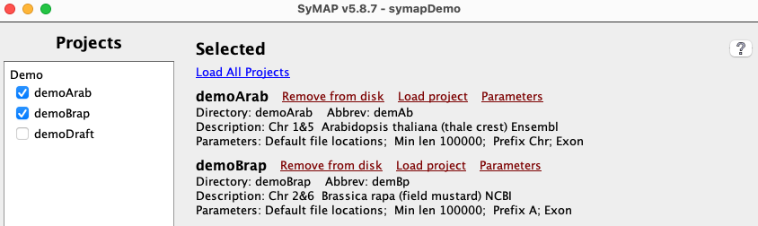 |
|
When done, the Manager will look like the image on the right.
Your may verify the results by selecting the View link.
In the Available Syntenies table, the cell for demoArab and demoBrap will automatically be selected (green cell). Click the Run MUMmer button to start the Align&Synteny. The MUMmer alignment takes less than 6 minutes on a MacOS x86_64 with 64Gb memory but could take up to 30 minutes on a slow machine. | 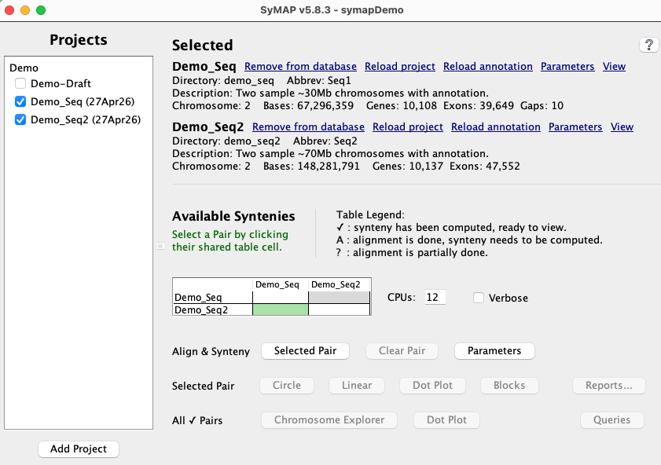 |
|
When done, the table will have a checkmark (✓), signifying that the synteny is available for viewing.
For faster alignments:
| 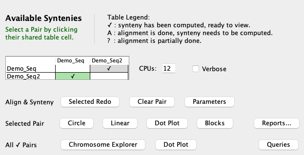 |
|
From the Report... pull-down, select Summary to view the summary shown on the right;
there may be slight differences in the #Cluster hits
because of different numbers of CPUs, MacOS vs Linux, etc (but the #Blocks come out the same).
The resulting Dot plot is shown in the Demo Results .
Once the alignments are computed, the Align&Synteny parameters can be experimented without having to redo the alignments. This is done by changing the options on the pair Parameters panel. See Demo Results for the results from using the Cluster Algo1 (modified original) and Synteny Original. It also show the results from Load Blast File. |
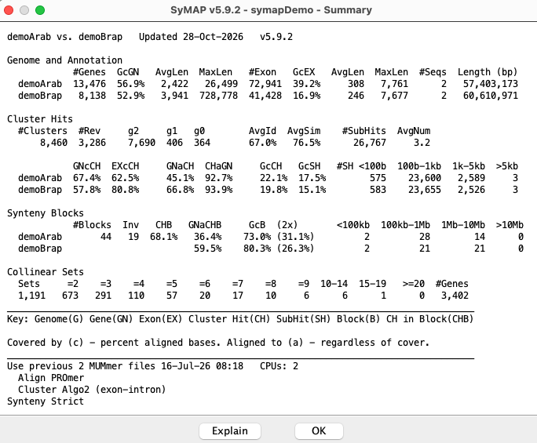 |


Demo draft ordering
|
From the Manager left side, select demoDraft
and demoBrap.
Load demoDraft.
Open the Parameters panel; at the bottom, select draft->demBp and uncheck Strict. Select Cluster Algo1. |
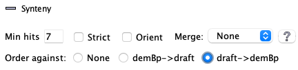 |

|
Select Run MUMmer, where the alignment should take less than
8 minutes with one CPU.
When done, open the Summary for the pair which will be similar to what is shown on the right; there may be slight difference in the number of Cluster hits. See the first Dot Plot for demoDraft.
A new project called demoDraft.demoBrap has been created,
as shown in the Manager on the right.
Run the Run MUMmer with the demoBrap and demoDraft.demoBrap projects, which will produce the synteny with ordered draft sequences. See the second Dot Plot for demoDraft. |
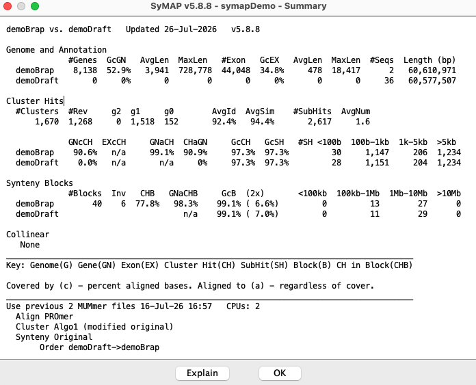 |


Using the project's Parameters panel, the demoDraft.demoBrap display name can be shortened.
Demo self-synteny
| To perform self-synteny, select the cell for demoBrap row and column (it turns green).
Click Run MUMmer.
See Demo self-synteny for more information. | 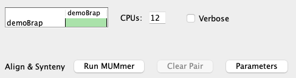 |

5. New projects and synteny
| Load project | Align& synteny | Draft ordering | Self synteny | Cancel | Go to top |
Database name: In the symap.config file that comes with the tar file, the parameter db_name (database name) is set to symapDemo. Edit the symap.config file to set the database name to something more meaningful. It is protocol to start the database name with 'symap'.
The following provides an outline of building a synteny database, referring to the webpages that contain the specific information.
Load project
Input files: See Input for an explanation on the input files and how to define their location to symap.
Load project: Assume that the projects foo and bar were created as described in Create.
| 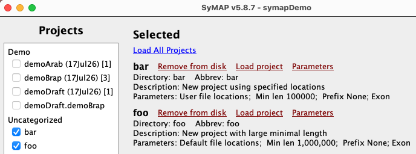 |

Align&Synteny
| 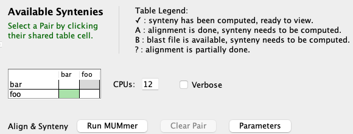 |

By default, MUMmer will be run; see Using MUMmer with SyMAP.
For fast results, but that do not provide gene discovery, use one of the following two:
- Select the Mask option for both sequences in pair parameters before MUMmer aligning.
- Load a blast tabular file of hits; see Use Blast tabular file.
Results: The following directories are used by SyMAP (<project> is the name of a /data/seq/<project>):
/data/seq_results/<project1>-to-<project2>/align # MUMmer alignments /data/seq_results/<project1>-to-<project2>/tmp # temporarily used during MUMmer alignments /data/seq_results/<project1>-to-<project2>/blast # User puts blast tabular resultsAs long as those three directory names are not used, the user can add other directories here. However, they will be remove if the project is removed and the user okays removing the top directory /data/seq_results/<project1>-to-<project2>.
The log files are in the /logs directory, see MUMmer log files for more details.
Draft alignment and ordering
Draft contigs are unordered and unoriented contiguous DNA sequences. They can be ordered and oriented against a closely related complete sequenced genome using the following approach.
- It is a good idea to first try Demo draft ordering.
- Load project for the draft contigs and related complete genome sequence.
- Open the pairs's Parameters panel.
- Select Run MUMmer for the pair.
This orders the draft contigs and creates a new project. The new project is named from the two project-names separated by ".". The new project will appear on the left panel of the Manager.
- Select the new project and Load project. Select the "ordered against" project.
- Select Run MUMmer for the pair. This merges contigs into possible chromosome sequences; this is illustrated by the demo Dot Plots
The ordering algorithm creates the following files and directories:
1. File of ordered draft sequences: It writes the order of the contigs along with whether they should be flipped to a file called /data/seq/<draft-project>/<complete-project>_ordered.csv.
2. New project: It creates a new project directory called data/seq/<draft-project>.<complete-project> (the naming allows the draft to unambiguously be ordered against different genomes). This directory will contain a sub-directories /sequence containing the FASTA file and /annotation containing the gap file.
3. FASTA sequence file of ordered contigs:
- Any contigs matching the Order against genome will be assigned the same chromosome name.
- All contigs aligning to an Order against chromosome will be appended together in order with 100 N's between each scaffold. The contigs will be flipped as appropriate.
- Any extra contigs will be put in ">Chr0".
4. Gap file: An annotation directory with a ".gff" file that specifies where the gaps are.
If the draft sequence is in too many sequence contigs, it takes a long time for the MUMmer comparisons. Also, the displays are very cluttered to the point of unreadable, but these will generally be merged with the new project synteny, so the new display is fine. Nevertheless, you may want to remove the smallest contigs. This can be done by limiting the number of sequence contigs by setting Minimum length in the project's Parameter panel to only load the largest 150 sequences. To determine the minimal length, use the Lengths button in the xToSymap interface, which will print out all the lengths; set the Minimum length to the 150th length.
Self-synteny
| To perform self-synteny, select the cell for the same project (it turns green) followed by Run MUMmer. | 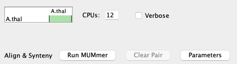 |

- Chromosome to itself: The Align&Synteny Parameters panel has an option to set Self Args, which is only used when comparing the chromosome sequence file to itself.
- Make sure that the Cluster Hits Algorithm 1 option is selected.
|
The Dot plot on the right is Arabidopsis thaliana from NCBI, converted with the NCBI convert script. It took 16 minutes with one processor on a Mac Mini (2018) with 64Gb main memory. The Dot plot is symmetric, with the same block on both sides of the diagonal. For self-synteny query and display, see Self-synteny | 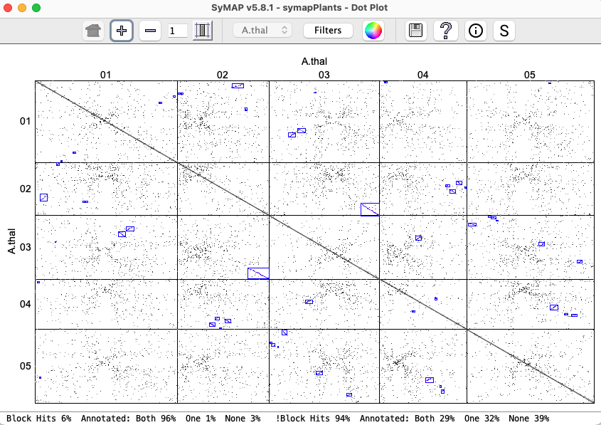 |

Cancel
| The Load and A&S methods have a popup progress panel, as shown on
the right. There is a Cancel button on the bottom that can be clicked to cancel the execution;
it will remove the results from the database and exit.
Occasionally, the Cancel will cause it to create an error, writing to the error.log or to the terminal. This is not a problem, though you may need to remove the results yourself. If MUMmer is running when you Cancel, make sure there is "Error: Failed command:" line to terminal for each MUMmer alignment that was running; if there is not, use the "top" linux command to view the running processes and stop any MUMmers still running. | 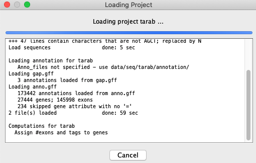 |

6. General
| Update | References | Go to top |
How to update SyMAP with a new release
If you have been working with SyMAP and have existing projects:- If there are only changes to the symap.jar, download it from github and replace the one in symap_5/java/jar.
- Put the new symap_5.tar.gz in a permanent location and untar it.
- Replace the /data and symap.config from your previous SyMAP location to this new location.
- This approach is safest as it acquires all changes (e.g. scripts) except for changes to the demo files.
- Put the new symap_5.tar.gz in a temporary location and untar it.
- Move symap_5/java/jar/symap.jar to the java/jar location of your permanent SyMAP.
- Check to see if there are any /scripts or /ext changes that need to also be copied over.
References
1 Kurtz, S., Phillippy, A., Delcher, A.L., Smoot, M., Shumway, M., Antonescu, C., Salzberg, S.L. (2004). Versatile and open software for comparing large genomes, Genome Biology, 5:R122 Marcais, G., A.L. Delcher, A.M. Phillippy, R. Coston, S.L. Salzberg, A. Zimin (2018). MUMmer4: A fast and versatile genome alignment system, PLoS computational biology, 14(1): e1005944.
3 Krzywinski, M., J. Schein, I. Birol, J. Connors, R. Gascoyne, D. Horsman, S. Jones, M. Marra (2009). Circos: An information aesthetic for comparative genomics. Genome Research doi:10.1101/gr.092759.109.
4 Soderlund, C., Nelson, W., Shoemaker, A., and Paterson, A.(2006). SyMAP: A system for discovering and viewing syntenic regions of FPC maps. Genome Res. 16:1159-1168.
5 Soderlund, C., Bomhoff, M., and Nelson, W. (2011). SyMAP: A turnkey synteny system with application to multiple large duplicated plant sequenced genomes. Nucleic Acids Res V39, issue 10, e68.
6 Katoh, Standley (2013). MAFFT multiple sequence alignment software version 7: improvements in performance and usability. Molecular Biology and Evolution 30:772-780.
7 Edgar, R (2004). MUSCLE: a multiple sequence alignment method with reduced time and space complexity. BMC Bioinformatics 113.
8 Soderlund, C., S. Humphrey, A. Dunhum, and L. French (2000). Contigs built with fingerprints, markers and FPC V4.7. Genome Research 10:1772-1787.
9 Engler, F., J. Hatfield, W. Nelson, and C. Soderlund (2003). Locating sequence on FPC maps and selecting a minimal tiling path. Genome Research 13:2152:2163.
10 Altschul SF, Madden TL, Schaffer AA, Zhang J, Zhang Z, et al. (1997) Gapped BLAST and PSI-BLAST: a new generation of protein database search programs. Nucleic Acids Res 25: 3389-3402. Download
11 Buchfink, Benjamin, Klaus Reuter, and Hajk-Georg Drost. Sensitive Protein Alignments at Tree-of-Life Scale Using DIAMOND. Nature Methods 18, no. 4 (April 1, 2021): 366-68. Download
| Go to top |
Email: cas1@arizona.edu